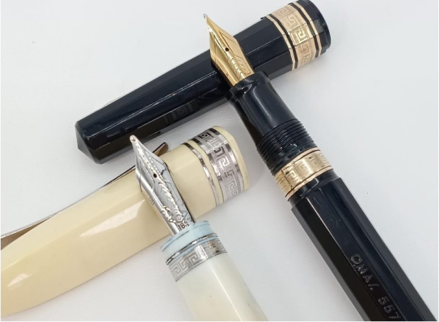
OMAS 万年筆
オマス／OMAS／557／360／18K／万年筆／18金／希少品
買取価格
35,000円
サービス内容
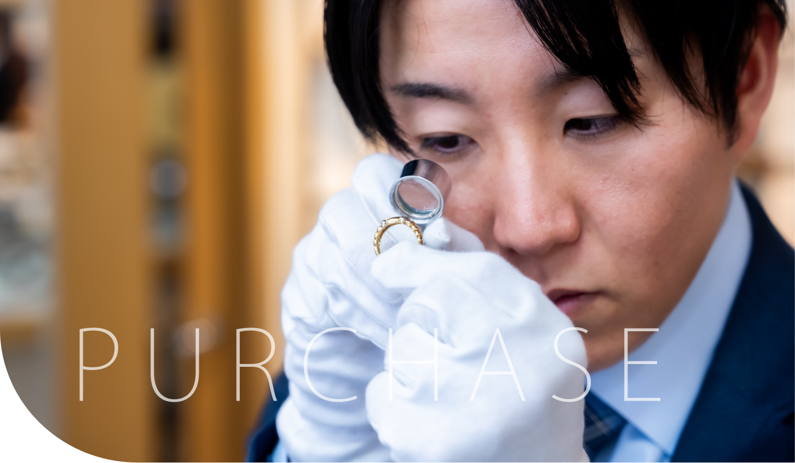
適正かつ高額査定を実現！
1958年創業の老舗が手掛ける
出張買取専門
『なんでも鑑定 なごみや』
安心の1985年創業、広島県最多7店舗、広島県で最高額査定のご案内です。
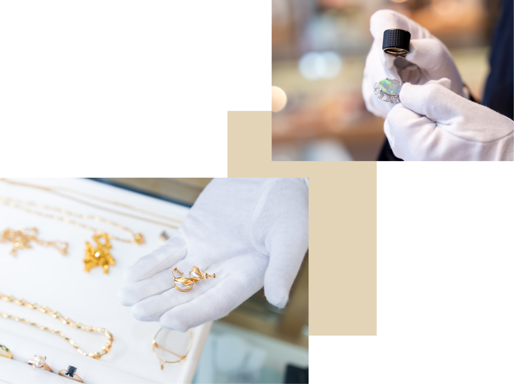
『なんでも鑑定 なごみや』
広島県内に実店舗を7店舗運営している小売店が母体なので、私たちは常にジュエリー・ブランドアイテムに対するお客様の流行を最先端で実感できており、査定に繋げることができています。
1958年創業以来、地域の皆様から信用を大切に受け継いできた歴史を誇りに、地元の買取店として自信をもって価格をご提供させて頂きます。
また女性査定員も在籍しておりますので、老若男女問わず多くの方に安心して買取をご利用頂いております。
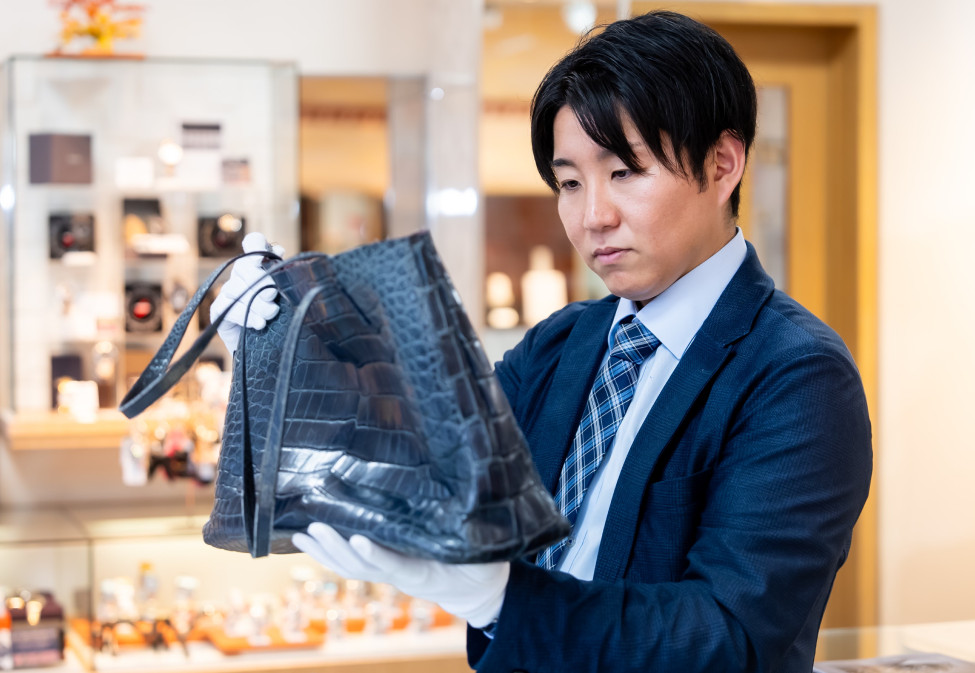
RESULTS
高額査定の実績をご覧ください。

OMAS 万年筆
オマス／OMAS／557／360／18K／万年筆／18金／希少品
35,000円
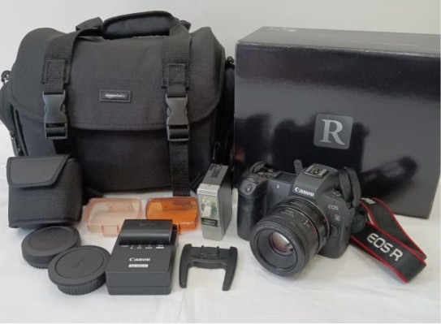
Canon カメラ
Canon／EOS R／ミラーレス一眼／カメラ／フラッシュ／バッグ
88,000円
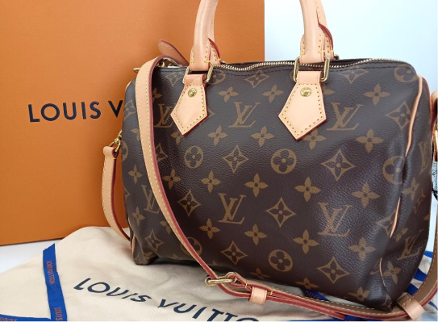
Louis Vuitton バッグ
LOUIS VUITTON／スピーディ／バンドリエール 25／M41113／ハンドバッグ
150,000円
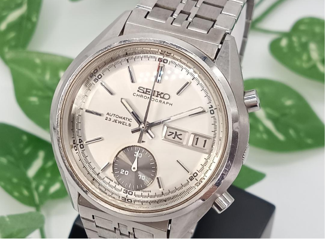
SEIKO 腕時計
SEIKO／セイコー／7018-8000／クロノグラフ／自動巻き
48,000円
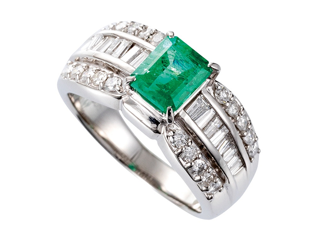
ダイヤリング
Ptエメラルド／ダイヤリング
390,000円
ヘネシーXO ブランデー
ヘネシー／X.O／中国／700ml／金キャップ／ブランデー
20,000円
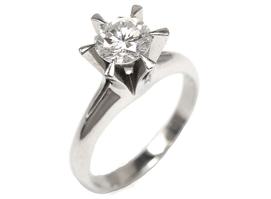
Diorネックレス
Ptダイヤリング／VVS1／ 1.00ct
1,000,000円
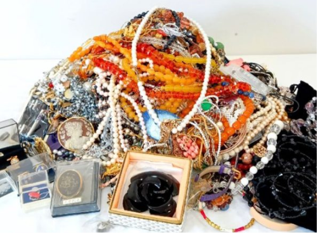
イミテーション アクセサリー
アクセサリー／ネックレス／ピアス／リング／イミテーション
80,000円
REPAIRED
一眼レフ、コンデジ、フィルムカメラ、レンズ
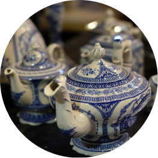
陶器、掛軸、鉄瓶、茶器、書画など
ウイスキー、ブランデー、ワイン、焼酎、日本酒
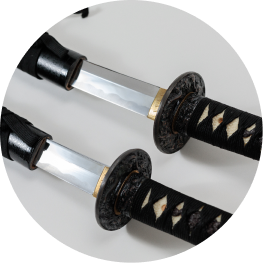
太刀、短刀、刀剣、脇差し、長巻など
バッグ、靴、財布、アパレル、時計
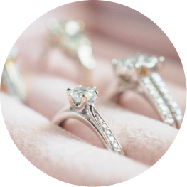
ダイヤモンド、色石、金、プラチナなど
自動巻き、クォーツ時計、機械式時計など
ソフビ人形、プラモデル、カード、フィギュアなど
記念切手、古銭、硬貨、金貨、銀貨など
上記は一例です。ぜひお気軽に見積もり等ご相談ください。
REASON
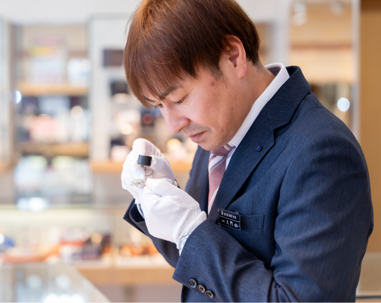
1958年から続く老舗で鍛えた資格を持った鑑定士がお客様の貴重品を鑑定・買取いたします。生前整理・遺品整理の資格を持つスタッフが専門的な視点で査定。
業界歴60年以上のプロが在籍し、ジュエリー、ブランド品などを正確に鑑定いたします。幅広いお品物に対応し、それぞれの適正価格での査定基準を採用しています。
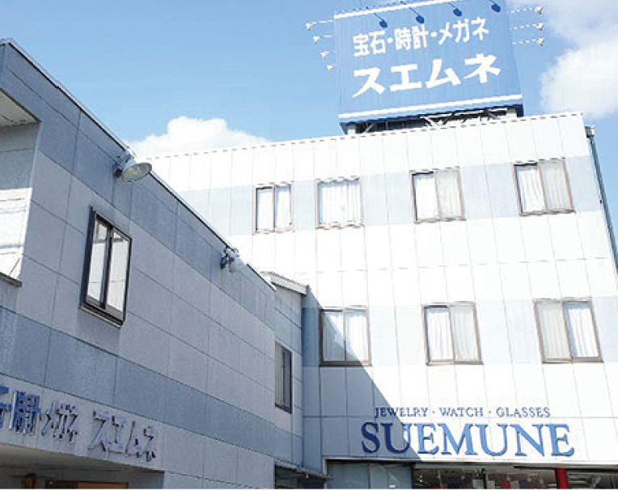
老舗小売店の販売ネットワークを活かし、海外・オークション・ブランドバイヤーなど国内外に複数の流通を確保しています。
その中から、最も高く売れる方法を選べるため、お客様の想像以上の価格で、適正かつ高価な査定が可能です。
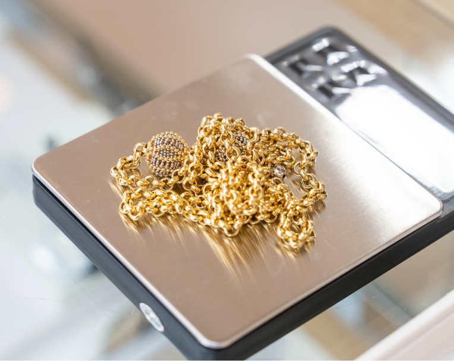
当社の小売店舗・ネット・口コミ・出張買取を中心に運営しており、多額の費用がかかる広告は行っておりません。。一般的な買取店にかかるコストを抑えているため、そのカットした分をそのまま買取価格に反映できております。
だからこそ、他店より高くなるケースが多いのが特徴です。余分な運営費や賃料などの経費を抑え、広島県でNo.1高額査定を実現しています。